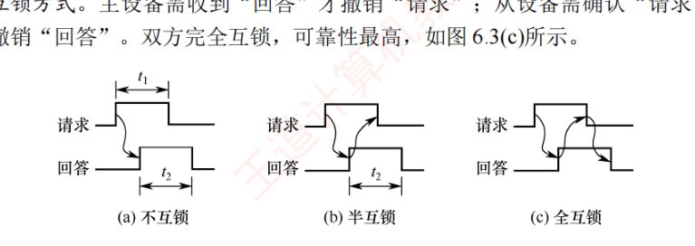

6.2 总线事务和定时
总线只有一条，设备却有许多，这一节讲两件事：一次完整的数据交接过程怎么定义、分几步（6.2.1 总线事务），以及收发双方靠什么规则对上节拍（6.2.2 总线定时：同步、异步、半同步、分离式四种）。本节是选择题的高频产区，「突发传输时间计算」和「互锁方式辨析」几乎年年露面。
6.2.1总线事务
在总线上，主设备（如 CPU、DMA 控制器）与从设备（如主存、I/O 设备）之间完成一次完整的信息交换过程，称为一个总线事务。总线事务的类型由操作性质决定，典型的包括存储器读（从主存取数据至处理器）、存储器写（向主存写入数据）、I/O 读/写、中断响应等。
每个总线事务通常包含三个基本阶段：
- 地址传输阶段：主设备将目标地址和操作类型（读/写）通过总线传送给从设备。
- 从设备准备阶段（也称数据准备阶段）：从设备根据地址准备数据（该阶段的耗时与设备特性相关，若题中未明确提示，则通常可忽略）。
- 数据传输阶段：完成实际数据在总线上的传输。
1. 非突发传输与突发传输
总线上连续数据的传输可采用非突发或突发两种方式。
- 非突发传输方式：每次传输一个数据单元（通常为一个总线宽度的数据）。每次传输都必须独立完成完整的三阶段流程——先发地址，等待从设备准备数据，再传输数据。因此，即使连续读取多个相邻数据，也需要重复发送地址，导致地址开销大、效率较低（2023 真题考过其时间分析）。
- 突发传输方式（也称猝发传输）：用于高效传输连续成块的数据。事务开始时，主设备仅发送数据块的首地址；随后在不释放总线的前提下，连续传送多个数据单元，后续地址由硬件自动递增生成（如首地址+1、首地址+2……），无须重复使用地址线（2012—2014 真题反复考查）。
2. 串行传输与并行传输
数据在总线上的物理传输可采用串行或并行两种方式。
（1）串行传输方式：数据按比特位依次顺序传输，通常仅使用一条双向线路或两条单向线路（发送/接收各一）。优点是引脚少、布线简单、抗干扰能力强，适合长距离通信（如 USB、PCIe、SATA）。在串行通信中，根据收发双方的时序协同方式，又可分为同步串行通信和异步串行通信：
- 同步串行通信：由发送方时钟直接控制接收方时钟，实现位同步。收发双方的时钟严格一致，仅在数据块首尾附加开始/结束标记，传输效率高，但硬件实现复杂、成本较高。
- 异步串行通信（2016 真题考过其特点）：收发双方使用独立时钟，无须严格同步。每个字符独立传输，并通过起始位（逻辑 0）标识开始、停止位（逻辑 1）标识结束。当通信线路空闲时，保持逻辑 1 状态；发送方要传送字符时，先发送一个逻辑 0 作为起始位，接收方检测到该低电平后便开始读取数据。数据从最低位开始逐位发送；发送完数值后，可选择性地发送一位奇偶校验位用于简单的差错检测，随后发送停止位，表示该字符的结束。
（2）并行传输方式：利用多条数据线同时传输多个比特位（如 32 位、64 位总线），理论上单周期即可完成一个字的传输，短距离内延迟低、吞吐高。但随着频率的提高，信号串扰和时序偏移问题加剧，限制了工作频率的提升。因此，并行传输更适合板级或芯片级的短距离通信（如早期 PCI、内存总线）。
6.2.2总线定时
总线定时是指总线上主设备与从设备在交换数据时，用于协调双方操作时序的控制协议，其实质是一种时序规则，主要有同步、异步、半同步和分离式四种方式（2015、2021 真题考过各种定时方式的特点）。
1. 同步定时方式
同步定时方式采用系统统一的时钟信号来协调发送方和接收方的传送定时关系。时钟产生相等的时间间隔，每个间隔构成一个总线周期，每次数据传送在一个总线周期内完成。由于采用统一时钟，所有操作必须严格在固定间隔内进行，总线周期连续运行。
- 优点：传送速度快，具有较高的传输速率；总线控制逻辑简单。
- 缺点：主从设备之间属于强制性同步，所有操作严格受时钟节拍约束；缺乏应答或握手机制，无法根据设备的实际状态动态调整操作，可靠性较差。
- 适用场景：适用于总线长度较短，且所挂接各部件的存取时间比较接近的系统。
2. 异步定时方式
异步定时方式不依赖统一的时钟信号，而是通过主从设备之间的握手信号实现定时控制：主设备发出「请求」信号，从设备准备就绪后，发出「回答」信号。
- 优点：总线周期长度可变，能可靠连接工作速度差异较大的设备，自适应性强。
- 缺点：控制逻辑复杂，因多次信号交互，整体传输速度较低。
根据「请求」与「回答」信号的撤销是否互锁，异步定时方式可分为三类：
- 不互锁方式：主设备发出「请求」后，无须等待「回答」即可自行撤销；从设备收到请求后立即发出「回答」，并在延时 \(t_0\) 后自动撤销。双方无互锁关系，如图 6.3(a) 所示。
- 半互锁方式：主设备必须等到「回答」后才撤销「请求」（存在互锁）；但从设备发出「回答」后，无须确认「请求」已撤销，在延时 \(t_1\) 后自动撤销（无互锁），如图 6.3(b) 所示。
- 全互锁方式：主设备需收到「回答」才撤销「请求」，从设备需确认「请求」已撤销后才撤销「回答」。双方完全互锁，可靠性最高，如图 6.3(c) 所示。

- 适用场景：适用于连接速度差异大、对可靠性要求较高而对速率要求不苛刻的系统。
3. 半同步定时方式
半同步定时方式结合了同步与异步的优点：地址、命令、数据的发送严格参照系统时钟前沿（如上升沿）；接收方通常在时钟后沿（如下降沿）进行识别；同时增设一条 Wait 信号线，允许慢速从设备反馈准备状态。主设备在时钟上升沿检测 Wait 信号状态：若 Wait 无效（高电平），表示数据未就绪，主设备将插入等待周期；直到 Wait 有效（低电平），才从数据线读取数据。
- 优点：在统一时钟下工作，控制比异步方式简单，可靠性较高。
- 缺点：系统时钟频率受限于最慢设备，整体速度不高。
- 适用场景：适用于包含多种速度差异较大设备、但性能要求不高的简单系统。
4. 分离式定时方式
上述三种定时方式均采用「独占式事务模型」：从主设备发起请求到传送结束，总线全程被该事务占用；然而在从设备准备数据阶段，总线虽被占用却处于空闲状态，造成资源浪费。分离式定时方式将一个总线事务拆分为两个独立子阶段：请求阶段与应答阶段，两阶段之间释放总线。请求阶段：主设备 A 获得总线使用权，发送地址和命令后立即释放总线，供其他设备使用；应答阶段：从设备 B 准备好数据后，主动申请总线，并以主设备身份将数据发回给 A。两个子阶段均为单向信息流，且总线在各期间可被其他事务使用。
- 优点：显著减少总线空闲等待时间，提高总线利用率。
- 缺点：控制逻辑复杂、协议开销大，对总线仲裁和事务管理机制要求高。
- 适用场景：适用于多主设备竞争激烈且从设备响应延迟较大的高性能系统。